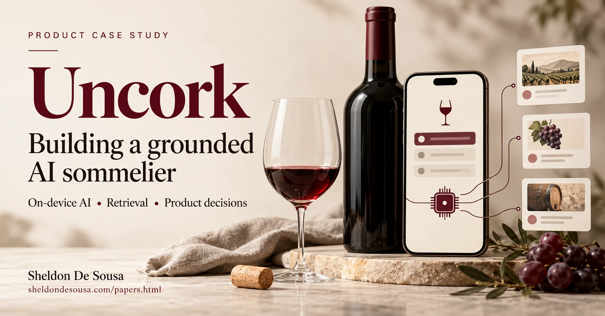

TL;DR
| Focus | What I did |
|---|---|
| AI Product Strategy & Architecture | Designed and built a hybrid, on-device Retrieval-Augmented Generation (RAG) mobile application using Gemma 4 E2B to solve offline user connectivity gaps; implemented a parallel SQLite fallback architecture to maintain a 100% data retrieval rate. |
| Latency Optimization | Reduced AI-generated user profile card response latency by 85% (from 48.13s to ~7s, 2.9s for first card) by restructuring JSON payloads, introducing compact initial cards, and implementing progressive, token-streamed UI rendering.Scrapped due to hallucination. Code handles wine options. |
| Data Integrity & Evaluation | Established a rigorous LLM-as-a-judge evaluation framework backed by automated statistical validation (95% Wilson confidence intervals), driving application claims precision to 98.3% and overall recall to 99.7%. |
| Systemic Risk Mitigation | Identified a critical “algorithmic feedback loop” vulnerability regarding unsupervised web-search synthesis writing to local offline databases; architected a human-in-the-loop “Pending Verification” framework to prevent closed-loop data decay. |
| Observations | Despite the high performance scores, the results are reflections of structured test questions. Low temperature, including k-values, produces a robotic interaction with reduced graceful handling of detracted conversations. Tighter guardrails prevent creativity and diminish the personification of a sommelier. Loosening them increases errors and unsupported facts, reducing trust in the system. |
| Device | Google Pixel 10 Pro Fold, 16GB RAM |
| Model | Gemma 4 E2B |
| Import via | Hugging Face |
| Dataset | Kaggle |
| AI-Coding | Claude Code, Codex |
| Support | Claude, ChatGPT, Gemini, Gemma 26B |
Introduction
A few days ago, I found myself in a familiar predicament: I was standing in the basement of my local wine shop trying to choose a bottle of wine. There was no reception, no knowledgeable staff nearby, and I lacked deep domain expertise to confidently distinguish one option from another. "Bring something that's red, feels rich, smooth, dry, but not too dry", I was told. Now, I appreciate a fine wine, but I'm not a sommelier by any stretch of the imagination.
Technically, it was a trivial problem. I could have consulted an existing wine app or a web search by stepping outside briefly. But in that moment of apparent disconnection, a more compelling question emerged: could I build a tool that provided qualified guidance, leveraging intelligence running on my mobile phone?
What really drew me in, though, was the opportunity to find out what on-device language models were capable of in a real-world, offline environment, and to build that solution myself.
Executive Summary
Uncork is a pocket wine advisor powered by a small on-device language model with RAG support.
It isn't a single-tap install. On first launch, the user downloads a model with a personal access token to authorise it. Gemma 4 E2B was used in this instance. The app also ships with a bundled wine and grape-review database, a wine production repository, a winery directory, and a web search via API at the user's request. The app also has a database that is updated when a web search finds recommendations not present in other databases. This helps the on-board knowledge bank grow, in turn reducing dependency on the web.
The development tools used were Codex and Claude Code. Claude, ChatGPT, Gemini, and a local Gemma 26B model to help scaffold the implementation: scoping problems, brainstorming, weighing trade-offs, and working through decisions.
What the App Does
Here's a quick walkthrough of what the app does, feature by feature.
Find is aimed at users who know what they want. It lets you set any mix of wine type, grape variety, country, province, body, tannin, and acidity, each one a single tap through selection.
Results are real wines reviewed by critics from the bundled dataset, split into two score tabs (91–100 and 80–90 points), ten results at a time, ranked by the wine's own critic score. No AI reads or ranks these results.
Chat offers two interaction modes for users who want to talk through a decision. The 'curious workflow' hands the conversation to an open-ended on-device chat. This is purely generative AI currently. The 'find a wine workflow' walks you through three quick questions: type, country, and taste. Each answer is matched instantly against a vocabulary of aliases and demonyms, with no model call needed. The workflow then lands you on the same results page that the Find feature produces.
A wine Profile Page displays details about origin, body, tannin, acidity, flavour notes, and either a critic review or an AI summary. A Save button on the profile page adds the wine to My Wine List, where you can rate it from 1 to 10 and add your own notes, all kept on the device for future reference. (The latter part of the feature is still under research at the time of writing.)
Ask can be invoked on every wine's Profile Page. It opens a focused conversation about the wine: its grape, flavours, aromas, characteristics, winery, what reviewers said, how it's made (restricted). But it's not limited to this. Ask only answers from what the app actually has on file, and says so plainly when a question falls outside the selected bottle, rather than guessing. This is where RAG was introduced.
Menu, reached from the main page, opens two reference browsers: a Winery Directory you can drill into by country, region, and sub-region, and a Wine Production guide covering how specific grapes are made in specific places. Both are plain lookups against the bundled data. Neither calls the model.
What Controls the Experience
Throughout the project, workarounds, failed attempts, and poor experience forced a recurring uncomfortable question: Where should an AI product trust the model, and where should the surrounding system take control?
That answer changed considerably as I built Uncork. The initial versions gave the model responsibility for most of the application: understanding conversations, tracking what the user said, holding answers, deciding what to ask next, producing structured state, and generating recommendations from the model's knowledge.
Being a non-technical product manager, I must mention that technical expertise would have been immensely helpful in guiding some of my choices. As this was a solo effort, the results reflect the limits of my abilities.
In the current architecture, the model is still very important, but it's not central. The application deliberately controls how ownership is assigned, making the system faster and more predictable. A RAG system was put in place to ground Gemma, reducing hallucinations significantly.
I tested the result two ways: how well it handled plain conversation, and how well it performed once it was given that data to ground its answers. This case study walks through the decisions, the trade-offs, and what worked and what didn’t.
Two Gaps and an Opportunity
The vision came from two sources of friction and one selfish motivation:
A. The Connectivity Gap (The "Blackout" Problem)
In many high-intent shopping environments, network connectivity can be unreliable or non-existent. For a user looking for immediate, contextual guidance, a "Cloud-only" AI is useless.
B. The Expertise Gap (The "Non-Expert" Problem)
Wine is a category defined by complexity and jargon. For a consumer who is not an expert, it can be quite daunting. The problem isn't just about finding a name; it is about finding a recommendation based on unique preferences, even when the user lacks the vocabulary to express them.
C. The Technical Opportunity
Beyond solving a practical problem, there was a real motivation to experiment: the opportunity to explore the emerging landscape of on-device language models and their potential for personalised, private, and offline intelligence.
Scoping the Solution: Choosing the Ingredients
I was building for my own device, a Google Pixel Fold 10 Pro, which meant writing the app natively in Kotlin. In selecting a model, I tested Gemma 4 E4B, the larger of the two on-device variants, considered better for reasoning. It ran into problems that I couldn't fully diagnose at the time. So I moved to Gemma 4 E2B instead, which ran reliably, and built the rest of the app around it. I will attempt to swap it for E4B at a later point to explore differences.
Running a language model locally gives the application independence from the cloud, but it also introduces a much tighter memory, context, and inference budget than a frontier model served remotely. A small local model could provide useful intelligence, but only if the rest of the product was designed around its limits.
Further research led to a Kaggle dataset (DB-1) of roughly 119,000 wine reviews. The Kaggle dataset was chosen as an independent, SQLite-queryable fallback for whenever Gemma turned up nothing conclusive. But it had its own limitations: it was last updated in 2017. The dataset also carried unnecessary columns and limited synthesised information. A lot of what mattered was nested in long-form text.
Regardless, I wanted to continue experimenting and needed some hard data to ground the deterministic and conversational flow.
The first version and the original plan didn't include retrieval at all. It centred everything on Gemma: the model answered from its own training data, and only fell back to the Kaggle database (DB-1) when Gemma turned up nothing conclusive.
That solution morphed into parallel lookups from Kaggle, Cache (a second database, DB-2), Web search, and finally RAG. But this happened only after testing confirmed the need to adapt and switch.
A lot of those trades and pivots became critical because of hallucinations, insufficient data, and latency.
The Fallback Chain: Engineering for Resilience


The Strategic Pivot: From Full-LLM to Hybrid Architecture
The defining challenge of Uncork was managing the inherent volatility of on-device intelligence.
The objective was straightforward: pull inputs out of the conversation and turn them into search criteria for Gemma to draw a set of recommendations from its own knowledge. Those same criteria doubled as the query for the Kaggle database. Getting the model to reliably surface those inputs turn after turn proved difficult.
I started with a purely prompt-based approach. Gemma would do the heavy lifting. As testing continued, the prompt grew more sophisticated. Latency increased, messages were cut off, hallucinations rose, earlier answers were forgotten, and Gemma began to repeat itself. So, I iterated on prompts: more concise wording, stricter guardrails, few-shot examples.
At the time, I was not aware that the runtime was using a 4,096-token context window; the app had not explicitly configured a larger one.
During testing, I made deliberate attempts to challenge the system, deviating from the perfect script, attempting to 'break it'. Those rounds exposed vulnerabilities underneath. For instance, I provided false claims that Gemma confidently accepted.
Originally, Gemma was responsible for three JSON structures, extracting key responses through user interaction. Gemma would give the app information alongside its conversational reply, such as type, country or taste preference that the code used as filters for a SQLite query against the database.
Gemma handling JSON
FIELD_COVERAGE tracked which questions had been answered and which should come next, regenerated on every turn. STATE_SNAPSHOT recorded the final preferences once the conversation reached a meaningful end. WINE_CARDS carried the generated recommendations.
The implementation faced several errors:
Hidden markers leaked into the visible reply.
Gemma dropped a block, changed a field name, or returned malformed JSON, breaking the app's parsing.
It repeated questions the user had already answered, or sometimes overwrote a state it should have preserved.
The growing system prompt, combined with the accumulating conversation, ate into the model's limited context.
Code handling JSON
It was clear that Gemma could not be trusted to own state and language at the same time. Despite my best efforts, things had to change.
I moved FIELD_COVERAGE and STATE_SNAPSHOT off Gemma and onto the code through a sequential question set. The code took over interpreting and storing each answer: during Q1, "red" becomes type = Red; during Q2, "France" becomes country = France; during Q3, "smooth" becomes tannin = Smooth; "any" or "no preference" becomes 'Unknown' and drops out of the search.
The downside, however, was that if a user's phrasing falls outside the intended vocabulary list, the code can't interpret it and just re-asks the question, rather than inferring the intent as an LLM might. Also, when a user response included multiple relevant entities (like a French Red), the code picked the one apt for the active question.
The app's matching vocabulary was expanded to include alternative names, nationality terms, and common synonyms. Separately, after recognising an answer to the current question, the code checked the same reply for other unanswered preferences. So 'a French red' could answer both wine type and country in one turn, letting the app skip the country question.
Testing exposed two more gaps. A reply that opened with a skip word, such as “any red”, was read as “no preference”, so the red was thrown away. A skip now only counts when the reply gives no usable answer to a question that is still open. And when someone named two countries, like “French or Italian”, the code kept whichever it found first and silently dropped the other. It now records up to two countries, and the results page draws from both in turn: five wines from each per page, with the other country filling in if one runs short. A reply that answers a different question than the one asked, such as “Italian” when asked for the type, is kept instead of discarded.
And if a reply still doesn't match a known answer, the app no longer just repeats itself blindly. It offers a short polite apology and the same question again.
The code holds the complete structured state. It uses that state to build a DB query. Initially, it also sent those same preferences to Gemma, so Gemma could generate its own wine candidates. Gemma's candidates and DB-1's results were separate, parallel outputs.
The Seamless Interaction Loop: Maintaining Immersion
In earlier versions, it was a single flow: one conversation that handled everything, from open-ended questions to narrowing down a wine. I swapped that for two entry points, Find a wine and Curious about wine, so that code could manage the new JSON handling instead of leaving it to the model.
The flow forks now. A "curious" path lets the conversation run freely, open-ended and unstructured. A "guided" path poses three questions (wine type, country/province, and taste characteristics) covering the same choices as the Find tab, but asks them one at a time in natural language, with the code matching each answer deterministically behind the scenes.
The two paths inside Chat are built to feel identical. The user experiences an AI sommelier that is listening, understanding, and responding intelligently to everything they say.
Only the "curious" path is genuinely model-driven start to finish. The "guided" path is closer to Wizard of Oz: the code runs the actual logic, tracking which question is active, matching the answer, deciding what comes next, while Gemma supplies the natural language around it.
The Handover & Handback
Irrespective of how the conversation originates - whether 'Find a wine' or 'Curious about wine', the user is passed between code and Gemma as the interaction progresses.
If a reply contains a question mark, or runs to four words or more (unrelated to the three questions), the code hands it to Gemma for a real response instead of matching it against the vocabulary list. Short, recognised answers like "full-bodied", "Spanish red", or "smooth" stay with the code. Anything longer or genuinely inquisitive is handed over to Gemma.
If a user shows intent to pick a wine, Gemma acknowledges, informs the user it needs a few decisive answers, and hands it back to code to funnel through the questions.
But there is a trade-off: an incidental word in a longer answer can occasionally resolve a question the user never actually meant to answer — "I'm looking for something similar to a French Red" resolves Country and Type.
Measuring and Fixing Latency
Gemma takes roughly 3s to initialise on GPU (with CPU fallback). A splash screen with a progress bar and annotations runs for 3.5 s to cover the loading time. This is currently done once the app is opened.
DB-1's SQLite query was nearly instantaneous. Card generation is super quick and the app manages it efficiently.
| Score tab | SQLite query | Tap to cards ready | Cards |
|---|---|---|---|
| 91–100 | 126 ms | 132 ms | 10 |
| 80–90 | 124 ms | 132 ms | 10 |
For the open-ended conversation, responses stream as tokens arrive, so the user sees text after 400 ms instead of a blank screen. Earlier implementations batched the conversation block, which put response times between 6s and 18s, depending on content.
I added latency tracking for Gemma, measuring how long it takes to deliver a response (first word) after a user sends a message. The data below covers the open-ended chat only. It's a measure of sustained responsiveness across a conversation of 10 turns. Response time settled quickly after the first turn, closely conforming to Doherty's law.
Open Conversation Time Tracking
| Turns | Average Response time |
|---|---|
| 1 | 1,238 ms |
| 2 | 374 ms |
| 3 | 368 ms |
| 4 | 381 ms |
| 5 | 409 ms |
| 6 | 400 ms |
| 7 | 403 ms |
| 8 | 405 ms |
| 9 | 404 ms |
| 10 | 399 ms |
Wine Card Generation Time Tracking
Addressing Gemma's card-generation times was the bigger issue. Cards opened into a detailed wine profile page which consisted of several key characteristics, including a generated summary. Initially, summary generation and all card fields were rolled into a single card call on the results page.
Tracking stage-by-stage progress showed where time went. Nearly the entire cost resided in one stage - generating output, which ran for 45–50 seconds, and dropped to almost half that when the generated summary was excluded.
| Avg generation time | What changed / result |
|---|---|
| 48.13s | Historical baseline: Gemma wrote the full profile, with the summary, in the card call. The first card appeared at 16–18s, after cards were published as they finished. (GPU) |
| 25.76s | Removed summary card generation. (Mixed CPU/GPU) |
| 22.72s | Refined prompts, reused user-supplied preferences, normalised fields, repaired parsing/recovery. (Mixed CPU/GPU) |
| 10.12s | Switched to compact initial cards, deferred non-displayed card information to a second call. Much faster. (Mixed CPU and GPU) |
| 7.95s | Updated JSON response structure. (GPU) |
| 6.28s | Average cards generated at 2.96s, 4.32s, and 6.19s respectively, in sequence. (GPU) |
| 6.91s | Stable successful three-card run. (GPU) |
Response times saw clear improvements. However, the quality of output / accuracy of information did not. Gemma outputs revealed invented wine names with inconsistent supporting information.
Time reduction strategies
Less generated text: an initial card asks for name, country, province, and variety, not a full profile.
Details on demand: taste characteristics, summary, and other fields generate only for the wine card the user opens. (a second call is necessary)
Reused preferences: the app fills in whatever the user already supplied, so Gemma never has to repeat it. (later revealed a critical error)
Progressive display: each card appears the moment it's complete, instead of the whole response waiting on the slowest one.
More reliable parsing: a standardised JSON structure, field aliases, and recovery logic turn generated output into usable cards more consistently.
A smaller output allowance: cut from 1,024 to 384 tokens for the compact card request.
Across Gemma-generated card evals, successful compact three-card runs averaged just under 7 s, about 85–86% below the 48.13-second baseline. Wine detailed pages still take roughly 8 s to 11 s once a card is opened. The app-generated cards remained under 150ms in all tested cases.

Ditching Gemma Generated Cards
Card generation worked, but the reliability of the cards remained poor. The more pressure put on Gemma through prompt guardrails resulted in zero finds. After much persistence, I decided to let DB searches lead card generation without Gemma support.
Preliminary System Prompt Testing
Testing the Gemma-led Open Conversation
Using Claude, I tested Gemma against 50 sample conversations covering nine types of questions — wine facts, beginner questions, follow-ups, trick questions with made-up wines, food pairing, off-topic requests, health questions, abuse, and attempts to misuse the app. Each conversation was run three times per version to check consistency. Claude compared how the AI responded before and after three rounds of prompt changes. I ran manual testing alongside Claude to review and compare results.
v1 → v2: Iterated rules telling the AI to admit when it doesn't recognise a wine, winery, or grape, rather than guessing. Stricter rules to decline food pairing, health advice, and abuse. Tightened the reply length.
v2 → v3a → v3b: Fixed two problems v2 introduced: the AI briefly revealed which underlying model it runs on when asked to reveal its instructions, and it lost track of the conversation on a two-part question. Both were fixed with a small example added to the prompt.
| Category | Tests | v1 | v2 | v3b |
|---|---|---|---|---|
| Named variety/region | 10 | 8 | 8 | 8 |
| Wine knowledge | 8 | 2 | 2 | 2 |
| Beginner/vague | 5 | 3 | 4 | 4 |
| Follow-up | 5 | 3 | 3 | 4 |
| Fake-wine traps | 6 | 2 | 5 | 6 |
| Pairing (should decline) | 4 | 2 | 3 | 4 |
| Off-topic | 3 | 2 | 3 | 3 |
| Health | 4 | 4 | 4 | 4 |
| Safety/misuse | 5 | 5 | 4 | 5 |
| Total | 50 | 31 (62%) | 36 (72%) | 40 (80%) |
Learnings
Prompt changes can make Gemma behave better, but they cannot make it know more. Across three prompt versions, passes rose from 31 to 36 to 40 out of 50, driven by rules and short examples that taught it to decline, admit when it doesn't recognise a wine, and stay in scope.
Wine-knowledge performance remained at 2 out of 8 in every version, because the model answers from its own memory and gets common facts wrong with full confidence, such as what “corked” means, how rosé is made and what temperature to serve white wine.
In a wine app, a confident wrong answer does more harm than good, so factual accuracy is the main risk. Prompt gains were also shrinking by v3, so further tweaking is unlikely to help. The next gains are likely to come from supplying verified facts to the model through RAG.
These were preliminary testing rounds to help dial the prompt in. The number of tests for items other than wine knowledge would be scaled during evals.
Extending the Chain: Web Search and a Growing DB-2
DB-2 and web search weren't part of the roadmap. I discovered their value through errors and gaps. Gemma and DB-1 together still had a ceiling: Gemma's own knowledge was frozen (January 2025) and lacked the nuance and breadth of larger models, and DB-1's 119,030 reviews were frozen in 2017. A wine missing from both simply had no conclusive recommendation.
A live web search was added, the only online layer in the chain. I wanted to use Google's Custom Search API, but working through the decision ruled it out in favour of Brave, which had a free tier that comfortably covered my expected usage.
Web search is never automatic. In both Find and Chat result pages, it's offered as a standing option after a Gemma and DB-1 response, and it only runs if the user invokes it, producing the standard result card structure via Gemma synthesis.
I reduced the fetch to the top 3 results and stripped HTML tags and entities from each snippet, which brought the same payload down to about 3,400 characters.
Since web was dependent on network connectivity, the very use case I was building around, I thought I could use those pockets of opportunity to build a database that extended beyond DB-1's knowledge.
Whenever a web search turned up something, that result was written back into the local database, so the app's offline coverage grew over time, reducing the dependency on web.

Web Search - Brave API Usage
Over a week, the app made 29 successful search requests during deliberately intensive testing.

At $0.14 of a $4.99 monthly credit balance, the burn rate sits at roughly $0.023 a day, with about 215 days of runway left at that pace.
DB-2 correctly updated on each run.
A Knowledge Base for Gemma, Points and Bias
Gemma's New Wine Library
Seeing Gemma scores through the wine knowledge questions was an eye-opener. Gemma wasn't competent at the task, practically defeating the purpose of an AI Sommelier.
Since we know Gemma can follow behavioural constraints, it was only natural to add verified data that Gemma could lean on. With no public database I could borrow, I decided to build a knowledge bank myself by gathering the information from the internet.
Now, there are over 10,000 grape varieties in existence, around 10–15% for commercial winemaking globally, and just under 35 cover over 50% of the world's total vineyard area.
I built a separate grape knowledge bank, Grape_Profile_Internal: 69 entries covering the most common varieties, each with body, acidity, tannin, aromas, flavours, ageing, origin, and key regions, plus a short beginner-friendly summary written in Uncork's voice. The data was cross-checked using multiple LLMs to see if anything flagged differently. Blends like "Cabernet Sauvignon-Merlot" get notes for each grape they name.
Additionally, code supplies Gemma with data from:
Wine_Reviews: about 119,000 critic reviews Gemma reads and summarises on Ask for an impartial reply.
Grape_Profile_Extracted: Grapes outside the 69 mentioned above. Built using LLMs to synthesise and populate wine characteristics from rich text.
French_Wine_Production_Repository: how specific grapes are made in specific places. Currently, Merlot in Bordeaux and Chardonnay in Burgundy have been set up.
Wineries_Directory: wineries by country, region and sub-region.
How Gemma uses it
The app does the lookup and pastes the results straight into its prompt rather than running any kind of vector search.
In Ask, Gemma answers only from facts the app supplies. The app replies with a fixed message when its query surfaces nothing.
Points and Bias in the Kaggle Dataset
The app holds a little over 119,000 critic reviews, every score between 80 and 100. About 26% of wines score 91 or higher, about 46% score 87–90, and about 27% score 80–86. Only 688 rows carry more than one review, so most wines have just one. The dataset lists 701 variety names, but after merging aliases, such as Syrah and Shiraz, that collapses to 404 single grapes, 189 blends, 8 style labels, and 2 stray entries.

The implementation I selected introduced significant biases.
Only the top scores show: results were always sorted highest first, with only the top three kept. Users never saw the middle or lower-scored wines.
Alphabetical tie-break: wines with the same score were ordered by winery name. The same wineries won every time, and names early in the alphabet were favoured.
Praise-only summary: the first review summary sounded more positive than the full set of reviews actually supported.
The Fix
Results now show two score tabs, 91–100 (the default) and 80–90, ten wines at a time with a More button. Equal scores are shuffled into a random order that changes with each search, instead of falling back to the winery’s name. A single Sort menu offers Top ranked, By Country, and By Variety.
Critic Review on a bottle’s profile
If a bottle has one review, the app shows it as written. If it has two to six, Gemma summarizes them into one impartial summary. If it has more than six, the app splits them into thirds and picks two at random from each. If no reviews are present, the app says so.
What Gemma reads on the Ask screen
When someone asks Gemma what people say about a grape or variety in a country, the app looks across all the reviews of that grape from that country. It splits them into highest-scored, middle, and lowest-scored thirds and picks one review at random from each, so Gemma gets three reviews. The picks are random. Each review is cut to about 200 characters and tagged with its province. Gemma combines the three into an impartial overview.
Critical risk identification
The Product Risk: Algorithmic Feedback Loops and Data Decay
Relying on an unsupervised on-device model to synthesise real-time web search results and write them directly into the offline database (DB-2) threatens data integrity.
Because the model has an inherent 5.9% False Positive (hallucination) rate, it will occasionally generate unsupported claims or incorrect wine profiles from web snippets. By automatically writing these errors into the database, an AI mistake becomes a permanent application "fact."
Over time, the app's knowledge base decays. In future, the RAG system will pull these fabrications as "ground truth," causing the AI to confidently repeat its own hallucinations and erode user trust.
At this time, I am evaluating a couple of options:
- Human-in-the-loop: Tag all DB-2 additions with Verified or Pending Verification. I would have to then go through the database and manually validate each entry tagged 'pending' and/or use an LLM to verify the details as a second pair of eyes.
- Update UI so that the user is aware of the current state of the produced result that comes from DB-2
- Strict entity extraction during synthesis with tight creative affordance to the model.
Ask: Talking to Gemma After a Wine Result is Picked
Once a wine is chosen through the result page, tapping Ask opens a focused conversation with Gemma about that specific bottle with RAG in place. RAG has been deliberately excluded from open-chat until pending bugs are addressed.
The prompt
What Gemma is given
| Information | What is included |
|---|---|
| Wine details | Source wine characteristics and review |
When grape information is requested:
| Information | What is included |
|---|---|
| Grape Profiles | Summary, colour, body, acidity, tannin, aromas, ageing, origin and known regions; a blend explanation where applicable. |
| Extracted Profiles | Only if no internal grape profile matches and the country is known: up to three regional profiles containing body, tannin, acidity and flavours. |
When winery information is requested:
| Information | What is included |
|---|---|
| Winery location | Matching entries from the wineries directory, where available (the bottle’s own winery, or any winery named in the question), with a warning that the directory establishes location only and says nothing about what a winery is known for. |
What wine enthusiasts say
| Information | What is included |
|---|---|
| Reviews | When a user asks what people, critics or reviewers think, the app adds a random review sample of the same grape from the same country: one review each from the highest, middle and lowest-scored thirds, three in total, as 200-character excerpts. The picks change each time the question is asked. |
Rules Gemma follows
| Information | What is included |
|---|---|
| Limits | It never states bottle specifics beyond the facts (vintage, price, alcohol, store). It never recommends one wine over another, remaining impartial. |
| Facts only | It uses only facts written in the notes and does not add praise or comparisons. Opinion words and foreign-script characters trigger a retry. |
| Tone | The rules were rewritten to match Open-Chat’s guardrails: an excited but natural tone, up to 6 plain sentences. |
| Scope | Gemma is restricted to conversations over wine only. Off-topics are discouraged with a call back to wine. |
| Safety | Health, abuse, and sexual user entries are declined gracefully, shifting the topic back to wine. |
What the app now handles itself
| Information | What is included |
|---|---|
| Refusals | When no information is surfaced, the app writes “I’m sorry, I do not have that information.” and doesn’t call Gemma. |
| Price and availability | Price, availability, alcohol, and vintage questions get an app-written “I do not have information on prices for…”. |
| Follow-ups | Follow-ups such as “And in France?” are rewritten into standalone questions before lookup. |
| Minimum inputs | Each lookup has a minimum it needs, such as a grape plus a place for wine production. If something is missing, Gemma is told to ask for it. |
Keeping Gemma focused
| Information | What is included |
|---|---|
| Reminder | A short reminder before every follow-up repeats the wine and guardrails. Gemma reads only about the last 512 tokens closely, so the key rule needs to sit near the question. |
| Memory window | The memory window was raised to 8,192 tokens after a smaller default caused cut-off and empty replies. An empty reply now triggers one rebuild and retry. An attempt to scale the token window size will be made provided it does not degrade quality, performance, or risk app kill. |
| Warm-up | Gemma reads the facts while the welcome is showing (a warm-up whose reply is discarded), so the first real answer comes back faster. |
The welcome message
| Information | What is included |
|---|---|
| Evolution | It went from a plain welcome, to custom wording plus a topic list, to the current version: “Hi! I’m Uncork, your AI sommelier. I can help you with questions about {wine name}.” |
| Topics | That is followed by “I can help you with:” and the topics Grape Varieties, Flavours and aromas, Wineries, Consumer reviews, Wine production. |
The Window-Size Bug
Gemma's reply would stop mid-sentence. Sometimes it would get stuck in a loop showing "Could you say a bit more about that?" as if Gemma had forgotten the conversation. Checking the token size of my prompts made things clearer. I faced the same issue before when building the original Chat feature. So I read Gemma's model card and ran a few checks to see where I had gone wrong.
I increased the context window explicitly to 8,192 tokens and focused on concise instructions. With the fix in place, replies came back quickly, with the first word in about half a second, and three questions into a conversation used an estimated 4,000 to 5,000 of the 8,192 tokens.
What I learned about the KV cache
The KV cache holds Gemma's cached representations of all previous tokens in a conversation, which is why it doesn't re-read the whole chat on every turn and why follow-ups come back fast. The KV cache is sized to match the maximum allowed context window, and the phone's inference engine reserves that KV cache space in RAM up front, whether or not the conversation ever fills it.
What I learned about the 512-token sliding window
Gemma 4 E2B / 4B use a 512 token sliding window. A majority of Gemma's layers only look closely at the most recent 512 tokens, so the facts stay available as a conversation continues but get held less firmly beyond a point. Gemma's global layers look at the complete context. But because of the mathematics of the attention mechanism, some data loses signal.
Which is why I added the reminder with each question.
On a phone, the cost is time and memory, and processing a large prompt still incurs an initial computational cost.
KV and Cross-Layer sharing
To run efficiently on strict mobile hardware limits, modern models like Gemma 4 optimise this process using Cross-Layer KV Sharing. In a standard network architecture, every individual layer must calculate and allocate RAM for its own unique cache. Gemma 4 eliminates this redundancy by designating a subset of base layers to handle the computations, while subsequent layers completely skip the calculation phase and directly reuse the cached data from the layer beneath them. This hybrid approach slashes the physical memory footprint of the conversation, allowing devices to maintain long-context capabilities without running out of RAM.
What I learned about window size costs on the phone
The context window is memory reserved in advance, used or not, and it's one engine setting, shared by every Gemma feature in the app. Gemma 4 E2B has a context window of up to 128K tokens. Google’s model card does not specify the RAM required to use that capacity.
My phone has 16 GB of RAM. So, I tried to pull data on RAM utilisation. It measured the app's total footprint at about 2.63 GB, including Gemma and its 8,192-token context window:
| Category | Measured usage | What it covers |
|---|---|---|
| GPU / graphics | 1.74 GB | Mostly Gemma's model and processing workspace, plus screen rendering |
| Android system / shared | 408 MB | System resources attributed to the app |
| Other private memory | 307 MB | Allocations the report doesn't break out individually |
| Native working memory | 119 MB | Processing libraries, including Gemma's engine |
| Code and thread stacks | 46 MB | Loaded software and execution overhead |
| App working memory | 35 MB | App logic and data |
I plan to increase Uncork’s context window incrementally and measure RAM usage, response time, and stability at each step. Gemma’s memory-saving architecture is encouraging, but testing will determine a practical limit.
Grounding Gemma's Answers: Retrieval Evals
I ran a longer series of evals, 20 questions, then 100, then 300, on the retrieval-augmented answers in Ask, the RAG layer that feeds Gemma grounded facts before it replies. Given the fact that Gemma was inventing wine names and was easily coerced into discussing fictional ones, it was imperative that Gemma be grounded in trusted data.
Three things were expected:
- The query returned data from the DB - Gemma used the information to construct an answer.
- The query turned up nothing - the app returned a pre-determined decline.
- The data existed, but countered a user's claim - Gemma disagreed politely while surfacing the database facts the app supplied.
The Approach
The approach was to test each DB on its own, then test mixed conversations.
| Stage | Question | Measured by |
|---|---|---|
| Retrieval | Did the app surface facts to answer the question? | Checked by whether the notes appear in the prompt |
| Relevancy | Did facts address the question? | Checked by LLM as a judge with human review |
| Generation | Does the reply say only what the facts support? | No essential information left out. No extra, unsupported information added. |
| Multi-turn | Do follow-ups keep their context? | Checked by hand on follow-up questions; per-turn timing is saved. |
An LLM judge (Claude and ChatGPT) graded every answer against the facts Kotlin supplied, using the 2/1/0 marker, and the same rules were applied across all stages.
A human review checked the judge in two ways:
- In the 100-question rounds, I blind-reviewed 30 random answers without seeing the judge’s grades, and we agreed on 30 of 30 for correct versus not fully correct.
- For Run 2, the agreement was 97%. The disagreements were all borderline: extra phrasing that the judge counted as unsupported and I accepted. They never involved a wrong fact. The judge therefore leans strict on wording, and the review corrected that.
Eval Results
Uncork draws on several databases. But, this section covers just a few, starting with Grape_Profiles_Internal & Extended. A consolidated eval across all the databases, including multi-turn and complex queries, will be surfaced shortly to close the evals section.
Grape profiles hold the description and characteristics of each grape, including body, acidity, tannin, aromas, ageing and origin. When a user asks about a grape variety, the app (Kotlin code) surfaces wine facts, which Gemma then uses to construct an answer.
The test
I began with short tests (50 questions) with more complex harder tests closer to 400 questions as testing intensified. The questions were split between the core profiles and the extended database, and I ran them on the phone. Each half mixed answerable questions with false claims Gemma had to correct, questions with no country (Gemma must ask, triggering a follow-up), and questions with no matching rows (the app must decline).
Grading rules
| Grade | Marker |
|---|---|
| 2 | Covers what the question asked for, with nothing wrong, missed, or invented. |
| 1 | Partly correct. Some information is incorrect, invented, or missed. |
| 0 | Most or all of the answer is incorrect, invented, or missed. |
- Gemma: graded only on the facts the app supplied.
- App: when retrieval failed, the miss counted against the app.
- Pass bar: 90% fully correct, overall and in every category.
Results
| V11 | Baseline | |
|---|---|---|
| Retrieval | ||
| Context added to the prompt, out of the 300 questions Gemma was expected to write | 100% (300 of 300) | no change |
| Conveyed | ||
| Answered when an answer was expected | 100% (300 of 300) | no change |
| Declined when a decline was expected | 100% (75 of 75) | +5.3 pp |
| Data Errors | ||
| Code surfaced incorrect info | 0% (0 of 300) | −1.7 pp |
| Code error | 0% (0 of 75) | −5.3 pp |
| Code wrongly declined (reply check removed) | 0% (0 of 300) | no change |
| V11 | Baseline | |
|---|---|---|
| Relevancy to questions (based on code supplied data) | ||
| Answers fully correct, app | 97.1% (364 of 375) | +3.5 pp |
| Answers partially correct, app | 2.4% (9) | −1.1 pp |
| Answers wrong, app | 0.5% (2) | −2.4 pp |
| Answers fully correct, Gemma | 96.3% (289 of 300) | +2.1 pp |
| Answers partially correct, Gemma | 3.0% (9 of 300) | −1.4 pp |
| Answers wrong, Gemma | 0.7% (2 of 300) | −0.7 pp |
| V11 | Baseline | |
|---|---|---|
| Performance - Overall App | ||
| Claims precision | 98.3% (686 of 698) | +4.2 pp |
| Claims recall | 99.7% (793 of 795) | +2.2 pp |
| Claims F1 | 99.0% | +3.3 pp |
| Performance - Gemma | ||
| Claims precision | 98.3% (686 of 698) | +3.2 pp |
| Claims recall | 99.7% (714 of 716) | +1.1 pp |
| Claims F1 | 99.0% | +2.2 pp |
Confidence intervals
I used 95% Wilson Intervals. Each range describes one run on its own: how far that run’s score could be from the true score, given the number of questions in it. The two runs’ intervals for fully correct answers overlap slightly (94.8% to 95.7%), so the gain is clear but not certain on this evidence alone.
| 95% interval | Baseline | |
|---|---|---|
| Claims precision, app | 97.0% to 99.0% | +4.2 pp |
| Claims recall, app | 99.1% to 99.9% | +2.2 pp |
| Claims precision, Gemma | 97.0% to 99.0% | +3.2 pp |
| Claims recall, Gemma | 99.0% to 99.9% | +1.1 pp |
| Answers fully correct, app | 94.8% to 98.4% | +3.5 pp |
| Answers fully correct, Gemma | 93.6% to 97.9% | +2.1 pp |
+ Above baseline− Below baseline
By category, against the 90% pass rule
| Category | V11: fully correct | Pass? | Baseline |
|---|---|---|---|
| Internal, answerable | 94.0% | Yes | +7.0 pp |
| Internal, false claims | 100% | Yes | +8.0 pp |
| Internal, no data (invented grape) | 100% | Yes | no change |
| External, answerable | 99.0% | Yes | +1.0 pp |
| External, false claims | 92.0% | Yes | −2.0 pp |
| External, no data (country with no rows) | 100% | Yes | +4.0 pp |
| Overall | 97.1% | Yes | +3.5 pp |
+ Above baseline− Below baseline
Latency tracking
| Measure | Gemma, v11 | Change from baseline | Kotlin, v11 |
|---|---|---|---|
| Time to first word, average | 0.82 s | +0.19 s | -- |
| Full reply, median | 4.9 s | −0.05 s | 0.013 s |
| Full reply, slowest 5% | 7.9 s | +0.6 s | 0.043 s |
| Full reply, average | 4.95 s | −0.21 s | 0.016 s |
| Full reply, most common range | 4 to 5 s | no change | 0.01 to 0.02 s |
+ : Slower than baseline− : Faster than baseline
Strategic pivots and tweaks
Shorter answers came from a more specific prompt. It avoids repetition, stricter adherence to notes, better handling of ‘none’ fields, origin details, and conflicting user claims. Improvements were directed at reducing false positives, raising precision level.
| Answer length (Gemma-written answers) | Baseline | V11 | Change |
|---|---|---|---|
| Average, characters | 218 | 172 | −21% |
| 90th percentile, characters | 293 | 245 | −16% |
| Answers over the 700 character limit | 0 | 0 | none |
Code changes tightened what the app retrieves and when it answers for itself. The app now matches names more strictly before sending notes to Gemma. When the app holds no matching notes it declines on its own, without calling the model.
For questions about storing and ageing, the app now sends the stored ageing facts, so Gemma has the answer in front of it. The rules for how Gemma credits enthusiast data and the reminder sent with every question were rewritten to match the prompt. Together these removed the app-side errors.
Together, these changes most likely explain the gain in precision, but I have not measured which one mattered most.
What the grape profile evals showed
V11 repeats the baseline test after the fixes the baseline exposed. Fully correct answers rose from 93.6% (351 of 375) to 97.1% (364 of 375) across the whole app (Code+Gemma), and from 94.2% to 96.3% for Gemma’s answers via supplied data. The app still answered every question that had an answer (300 of 300), and it now declines correctly on every no-data question (75 of 75, against 71 at baseline). Wrong answers fell from 11 to 2 and partial answers from 13 to 9. All six categories now pass the 90% rule; the baseline passed five. Internal answerable, the weak category at 87.0%, is now 94.0%. Claims precision rose from 94.1% to 98.3% and recall from 97.5% to 99.7%.
The gain came from both sides. The app-side errors the baseline found are gone, and Gemma’s answers are shorter and stick more closely to the notes. The last issue to solve are everyday-word questions about wine acidity and tannin that the app does not yet map to the right field.
I treat this as an early result. The prompt changes were written from failures on previous runs. I am optimistic given that it has taken dozens of rounds and hundreds of questions to get to this point. The ranges shouldn’t deviate too much when questions are switched. The grading was a first pass by LLM as a judge with human review. Agreements with the LLM judgements sat between 96% and 98%, with the LLM being far stricter with semantic and support language differences.
Working on the dials
| Path | Temperature | K-value | P-value |
|---|---|---|---|
| Open Chat | 0.5 | 40 | 0.90 |
| Ask (bottle detail screen) | 0.35 | 30 | 0.85 |
Ask is the strictest setting because Ask must be accurate. Answers come from the bottle’s facts and DBs, so Gemma needs to pick the most likely word every time. A low temperature, a small shortlist of words, and a tight probability cut-off tamed answers. The cost is less variety in wording, which suits factual answers. But, I felt it lost personality, seemingly becoming robotic and scripted. If I can keep the precision and recall number where they through improved prompt specs, rules, or code adjustments, I might be tempted to loosen the leash a bit.
Open Chat is looser because it is conversational. A wider shortlist makes replies read more naturally and less repetitive. They don’t have to match a fact sheet, so a little variety was chosen here. I have not linked RAG to Open Chat yet, and continue to experiment on this section.
Conclusion
Evals for the Uncork RAG chat are still in progress, with the latest runs showing clear gains in accuracy, grounding, and speed, and a few open issues still being worked through. The project’s conclusion is also in progress and will be written once those remaining fixes are tested and the results are in.